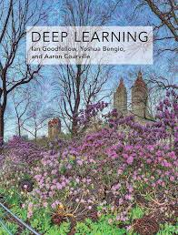

Deep Learning
Authors: Ian Goodfellow, Yoshua Bengio, Aaron Courville
Publication Year: 2016
Summary: This book provides a comprehensive introduction to the field of deep learning, covering theoretical foundations, algorithms, and practical applications.
Rating: 4.8/5 (1,200 reviews)
Return to Neural Network ResourcesTable of Contents
Chapter 1: Introduction to Deep Learning
This chapter introduces the field of deep learning, its history, and its impact on artificial intelligence. Topics include neural networks and key breakthroughs in the field.
Overview of Neural Networks.
Return to Table of ContentsChapter 2: Linear Algebra for Deep Learning
This chapter covers the essential linear algebra concepts required for understanding deep learning, including vectors, matrices, and operations like multiplication and decomposition.
Key concepts in Linear Algebra.
Return to Table of ContentsChapter 3: Optimization Techniques
Optimization lies at the heart of deep learning. This chapter discusses gradient descent, stochastic gradient descent, and advanced optimization algorithms.
Visualization of optimization algorithms.
Return to Table of ContentsChapter 4: Convolutional Neural Networks
This chapter delves into CNNs, a class of deep learning models highly effective for image recognition and processing tasks.
Example of a Convolutional Neural Network.
Return to Table of ContentsChapter 5: Recurrent Neural Networks
RNNs are specialized for sequence prediction tasks. This chapter explains the architecture, advantages, and applications of RNNs.
Diagram of a Recurrent Neural Network.
Return to Table of Contents